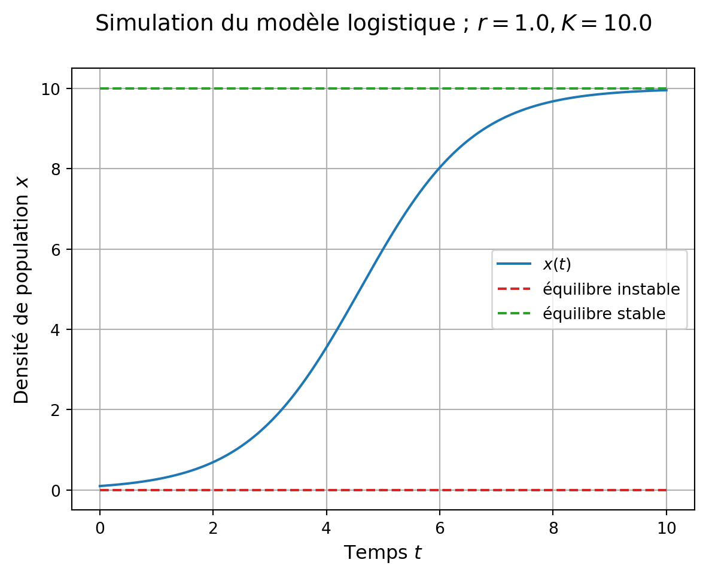

import numpy as np
import matplotlib.pyplot as plt
from scipy.integrate import solve_ivpSolveur Solve_ivp()
La méthode solve_ivp() de SciPy est aujourd’hui préférée à odeint() (cf. documentation de scipy.integrate. solve_ivp). Elle apporte notamment de la souplesse dans le choix de la méthode numérique d’intégration (voir Section 1.1).
A l’avenir, il faudrait migrer le contenu de ce TP avec solve_ivp()…
Nous allons reprendre ici les exemples d’intégration des modèles logistique et de Lotka Volterra.
Modèle logistique
Une différence importante entre solve_ivp et odeint est la façon dont on définit le modèle, dont la fonction doit nécessairement prendre le temps t en premier argument:
def model_logistic(t, etat, params):
x = etat
r, K = params
xdot = r*x*(1-x/K)
return xdotet la définition du tspan qui est un tuple (t_0, t_f).
## tspan
t_0 = 0.0
t_fin = 10.0
t_step = .01
tspan = (t_0, t_fin)On définit les conditions initiales et paramètres:
## condition initiale
y0 = np.array([0.1])
## paramètres
r = 1.0 # taux de croissance intrinsèque
K = 10.0 # capacité de charge
params_logistic = np.array([r, K])On intègre avec un appel à solve_ivp assez similaire à odeint:
sol_logistic = solve_ivp(
model_logistic, # fonction définissant le modèle
tspan, # temps d'intégration
y0, # condition initiale
args = (params_logistic,), # paramètres du modèle
max_step=t_step # définit aussi l'échantillonage de la solution
)La représentation graphique ne présente pas de difficulté lorsqu’on récupère correctement la solution:
sol_logistic.t, le tableau de temps correspondant à la simulation (qu’il conviendra de transposer en accord avec la forme de la solution)sol_logistic.y[0,:], qui permet d’accéder à la solution (.y) sur sa première composante ([0) (ici il n’y en a qu’une), le long des temps desol_logistic.t(,:])
Code
## figure et systèmes d'axes
fig, ax = plt.subplots(1, 1)
## titre de la figure
fig.suptitle('Simulation du modèle logistique ; $r = {}, K = {}$'.format(r, K),
va='top', fontsize='14')
## simulation
ax.plot(sol_logistic.t.T, sol_logistic.y[0,:],
color='C0',
label='$x(t)$') # solution
# équilibres
ax.plot(tspan, np.zeros_like(tspan),
color = 'C3',
linestyle = 'dashed',
label = "équilibre instable")
ax.plot(tspan, np.ones_like(tspan)*K,
color = 'C2',
linestyle = 'dashed',
label = "équilibre stable")
## modification des bornes
ax.set_ylim(bottom=None, top=None)
## axes / légendes / grille
ax.legend(fontsize='10')
ax.set_xlabel('Temps $t$', fontsize='12')
ax.set_ylabel('Densité de population $x$', fontsize='12')
ax.grid()

solve_ivp()
Méthode d’intégration
Une différence importante entre odeint() et solve_ivp() est la possibilité de spécifier une méthode numérique d’intégration pour solve_ivp(), alors que la méthode d’intégration est fixée pour odeint().
Par défaut:
solve_ivp()utilise la méthode de Runge Kutta d’ordre 5(4) (RK45)odeint()utilise une méthode Adams/BDF (LSODA issue de Fortran)
Pour changer la méthode d’intégration, on spécifie l’argument method:
sol_logistic2 = solve_ivp(
model_logistic, # fonction définissant le modèle
tspan, # temps d'intégration
y0, # condition initiale
method = 'LSODA', # méthode d'intégration
args = (params_logistic,), # paramètres du modèle
max_step=t_step # définit aussi l'échantillonage de la solution
)Modèle de Lotka Volterra
Il n’y a pas vraiment de difficulté en dimension supérieure.
On définit les conditions initiales, tspan et paramètres:
## densités initiales des populations
x0 = 1
y0 = 2.5
etat0_lv = np.array([x0, y0])
## tspan
t_0_lv = 0
t_fin_lv = 30.0
t_step_lv = 0.01
tspan_lv = (t_0_lv, t_fin_lv) # un tuple pour solve_ivp !
## paramètres du modèle
r = 1.0
c = 1.0
b = 1.0
m = 1.0
params_lv = np.array([r, c, b, m])Puis le modèle (ici le modèle proies-prédateurs de Lotka-Volterra) en prenant garde à l’ordre des arguments:
## définition du modèle de Lotka Volterra
def model_lv(t, etat, params):
x, y = etat # recupere les variables d'etat
r, c, b, m = params # recupere les parametres
etatdot = [r*x - c*x*y, # dot x
b*x*y - m*y] # dot y
return etatdot # renvoie la deriveeEt on effectue la simulation:
sol_lv = solve_ivp(
model_lv, # fonction définissant le modèle
tspan_lv, # temps d'intégration
etat0_lv, # condition initiale
args = (params_lv,), # paramètres du modèle
max_step=t_step_lv # définit aussi l'échantillonage de la solution
)La représentation graphique ne présente pas de difficulté, en prenant soin d’accéder aux composantes de la solution via sol_lv.y[0,:] et sol_lv.y[1,:] pour les composantes proies (x) et prédateurs (y).
Code
## création d'une figure, et d'un système d'axe
fig1, ax1 = plt.subplots(1, 1)
fig1.suptitle("Dynamiques Proies - Prédateurs modèle de Lotka Volterra",
va='top', fontsize='14')
## tracé de x et y contre le temps
ax1.plot(sol_lv.t.T, sol_lv.y[0,:], color = 'C0', label = "proies $x$")
ax1.plot(sol_lv.t.T, sol_lv.y[1,:], color = 'C1', label = "prédateurs $y$")
## axes & co
ax1.set_xlabel('Temps', fontsize='12')
ax1.set_ylabel('Densités de populations', fontsize='12')
ax1.legend()
ax1.grid()
solve_ivp()